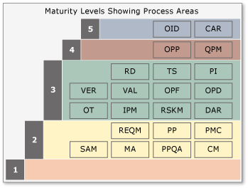
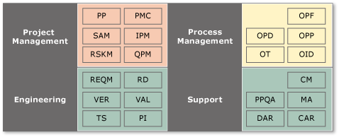
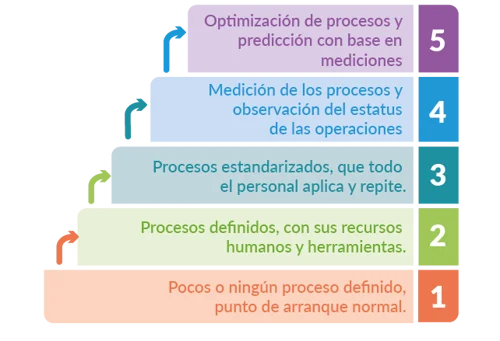

La estructura por etapas organiza 22 áreas de proceso, cada una vinculada a uno de los cinco
niveles de madurez de la organización.
Este enfoque permite evaluar la capacidad de los procesos en cada una de estas áreas,
ayudando a la organización a enfocar sus esfuerzos de mejora en los procesos que aporten el
mayor valor comercial. Las evaluaciones con este modelo generan perfiles de capacidad en
lugar de un simple nivel numérico. Dado que el nivel de madurez es un concepto comprendido
por la mayoría de los directivos y ejecutivos, es posible vincular los resultados de una
evaluación continua del modelo a las cinco etapas.
Utilizar el modelo de etapas como base para un programa de mejora de procesos puede ser
arriesgado si quienes lo implementan pierden de vista que el CMMI no es un proceso ni un
flujo de trabajo, sino una herramienta que establece objetivos a alcanzar mediante estos.
Cumplir con estos objetivos permite aumentar la madurez de la organización y la probabilidad
de que los procesos funcionen según lo previsto. Así, el propósito de cualquier actividad de
mejora debe ser lograr un progreso medible, no solo alcanzar un valor numérico.
Cada área de proceso incluye componentes necesarios, esperados e informativos. En una
evaluación basada en el modelo, solo los componentes necesarios son obligatorios. Estos son
los objetivos genéricos y específicos de cada área. Los componentes esperados, que son
procedimientos genéricos y específicos para estos objetivos, no son indispensables y pueden
ser sustituidos por procedimientos alternativos equivalentes. Los componentes esperados
orientan tanto a implementadores como a evaluadores, mientras que los componentes
informativos ofrecen detalles útiles para llevar a cabo una iniciativa de mejora basada en
CMMI. Estos incluyen subprocedimientos y ejemplos de productos de trabajo típicos.
En la representación por etapas, cada área de proceso se asocia con una etapa específica, como se muestra en la siguiente imagen.

(Figura 10: cmmi_detailstagedrep, Fuente: https://learn.microsoft.com/es-es/azure/devops/boards/work-items/guidance/cmmi/guidance-background-to-cmmi?view=azure-devops)
En cambio, en la representación continua, las áreas de proceso se agrupan por funciones, según se observa en
la siguiente ilustración.

(Figura 11: cmmi_detailcontrep, Fuente: https://learn.microsoft.com/es-es/azure/devops/boards/work-items/guidance/cmmi/guidance-background-to-cmmi?view=azure-devops)
Nivel 1. Inicial:
Procesos básicos, no estandarizados ni documentados. Los procesos
son impredecibles y reactivos. El éxito depende de los esfuerzos individuales.
Nivel 2. Gestionado:
Los procesos están planificados, documentados y seguidos. Se
enfoca en la gestión de proyectos y en la calidad de los productos.
Nivel 3. Definido:
Los procesos son estandarizados y documentados en toda la
organización. Existen procedimientos estandarizados y prácticas definidas
Nivel 4. Cuantitativamente Gestionado:
Se miden y controlan los procesos utilizando
datos y métricas para asegurar que se cumplan los objetivos.
Nivel 5. Optimización:
Se enfoca en la mejora continua de los procesos y en la
innovación. Se realizan ajustes para mejorar el rendimiento y adaptarse a los cambios.

(Figura 12: Niveles de madurez, Fuente: https://blog.innevo.com/cmmi-y-agile)